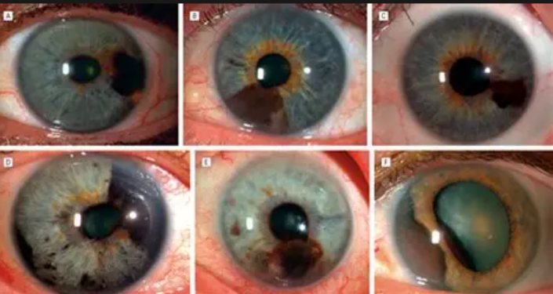

drasalcedocamargo
Los ojos son el espejo del alma
El cuidado de los ojos es una parte esencial para que la
vista se mantenga en perfectas condiciones durante muchos años.
Dentro de los cuidados básicos, es común cometer ciertos errores
cosméticos en la superficie ocular que debemos evitar para no irritar el ojo.
Por eso, queremos ayudarte con estos 10 consejos para cuidar
tus ojos que te ayudarán a cuidar y que tu salud visual se encuentre lo mejor
posible gracias a tu clínica oftalmológica.
Para complementar estos consejos, es ideal establecer hábitos
para cuidar la salud de tus ojos de forma permanente.
alimentos que te ayudan
Los vegetales y frutas de color naranja contienen vitamina A
aunque la alimencion es importante siempre visita a tu doctor de confianza
vez el nutriente más conocido como bueno para los ojos es la vitamina A.
Su retina necesita mucha vitamina A para ayudar a convertir
los rayos de luz en las imágenes que vemos, además, cuando no consumimos suficiente vitamina A,
los ojos no pueden mantenerse lo suficientemente húmedos como para prevenir el ojo seco.
Melanoma de iris

El melanoma ocular es una enfermedad por la que se forman células malignas
(cancerosas) en los tejidos del ojo.
El melanoma ocular comienza en la capa del medio de las tres capas de la pared del ojo.
La capa externa incluye la esclerótica (la parte blanca del ojo) y la córnea transparente
en la parte anterior del ojo. La capa interna la reviste un tejido nervioso que se llama retina;
esta detecta la luz y envía imágenes al encéfalo a través del nervio óptico.